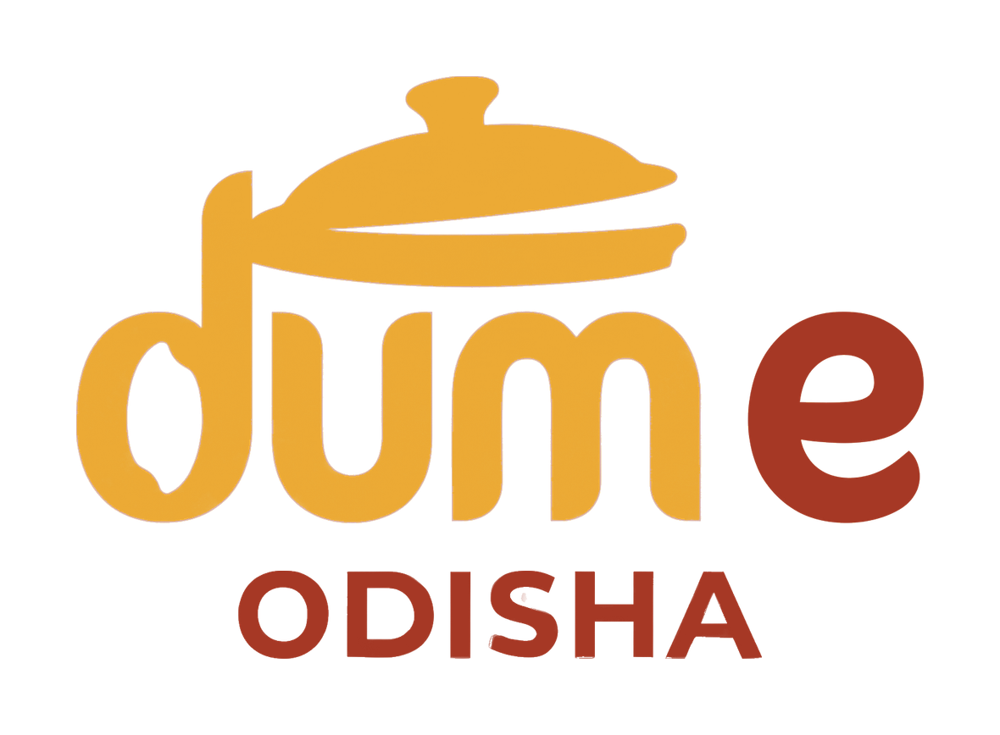
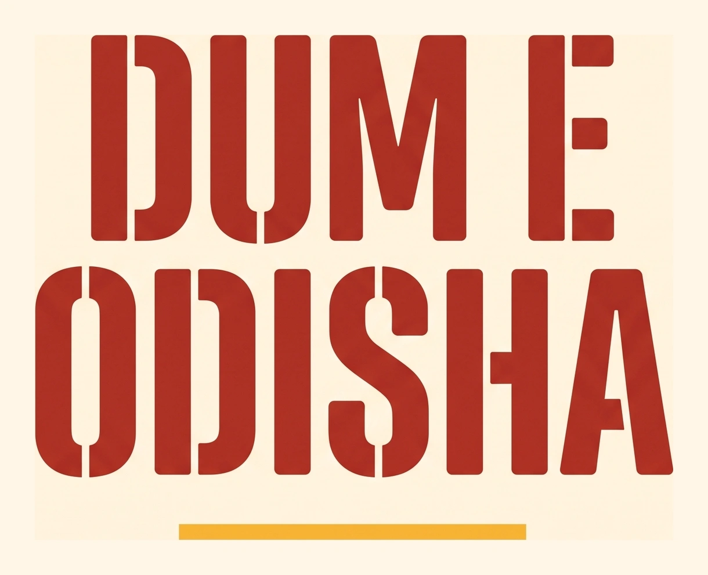
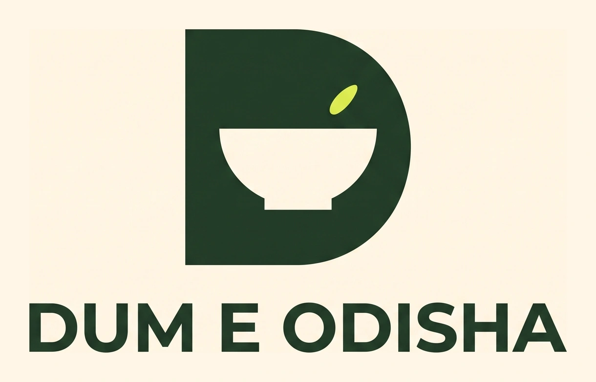
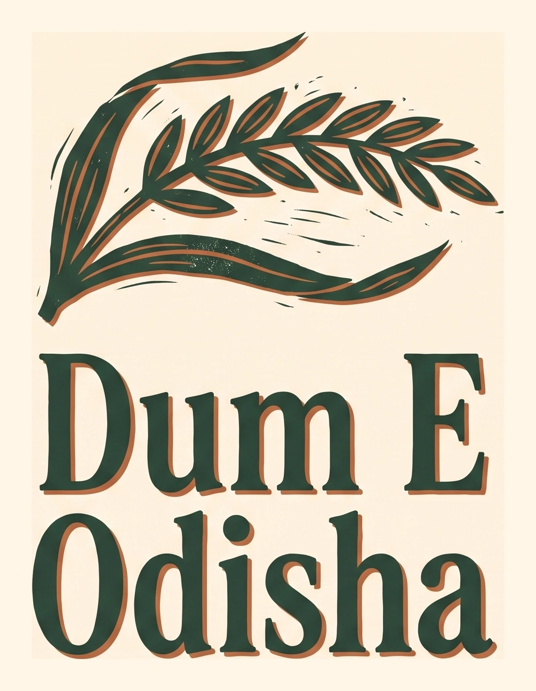
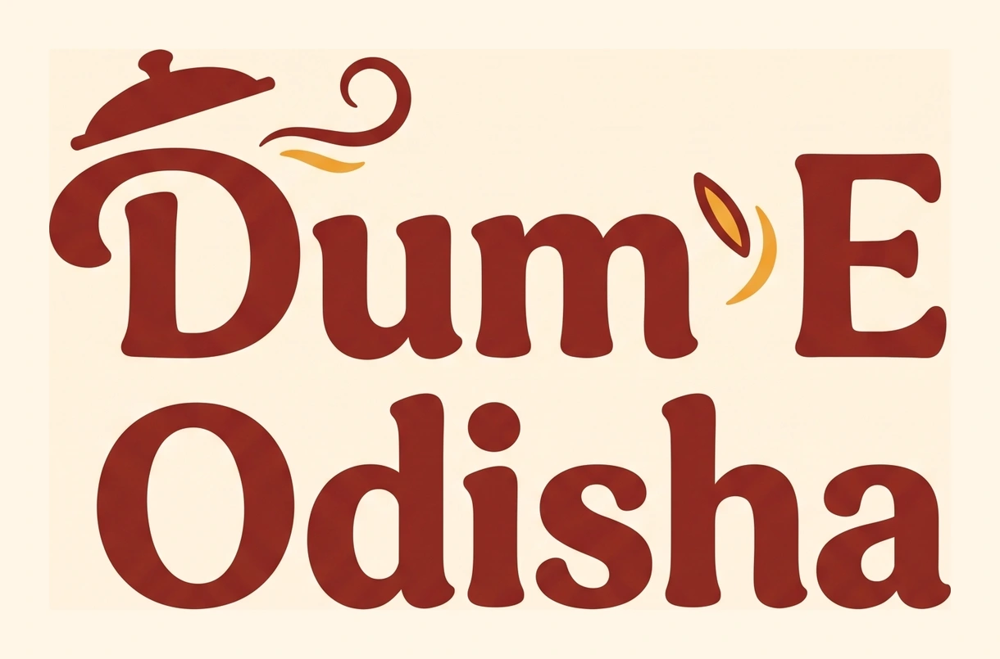
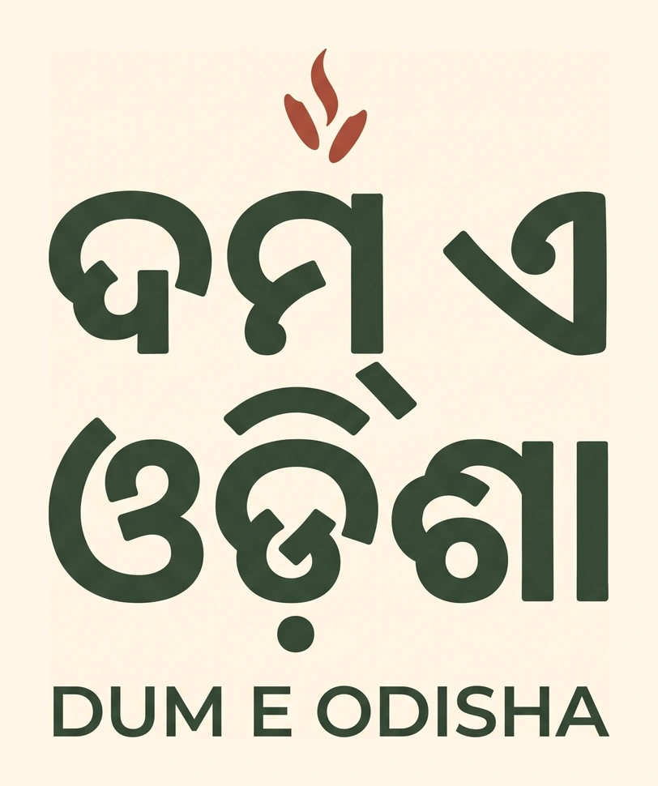
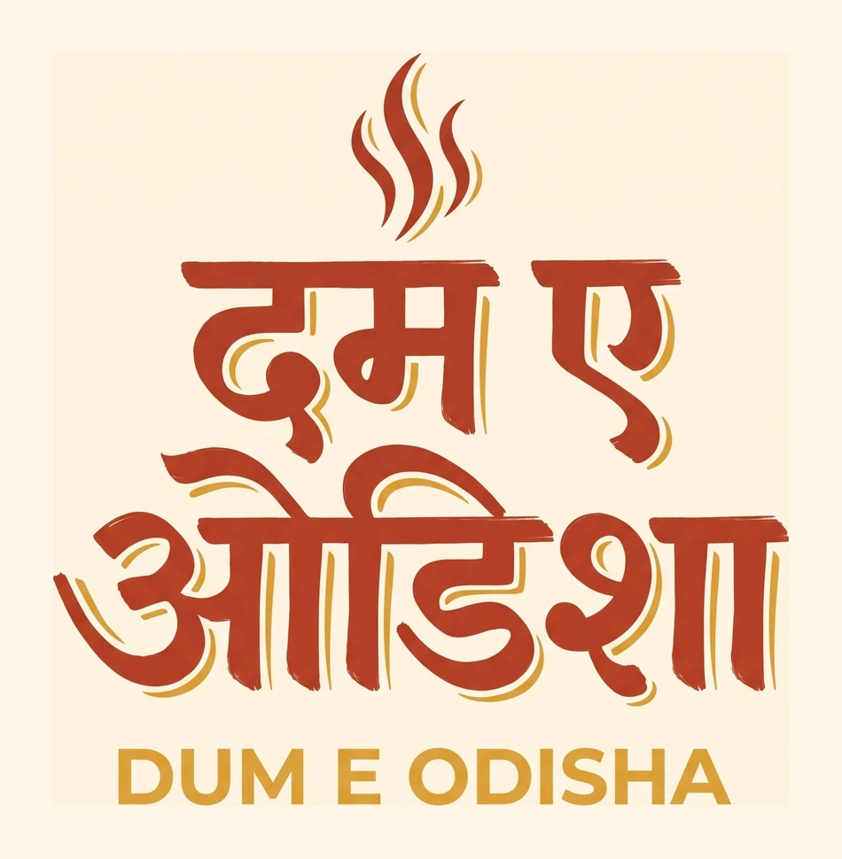

The Rice Club
A rice-grain host turns the brand into a friendly character. Blue and butter yellow build a recognisable world of stickers, packaging and hand-drawn moments.
View logo & brand world ↗Dum E Odisha / The idea collection
Choose a direction to see its logo, wall concept, wide banner, TV display and tall poster. The three new ideas study the lettering relationships in your references while keeping the artwork original.
New / Image-only and mixed-script logos

A lettering-free cooking-pot host, plus genuine Hindi/English and Odia/English wordmarks. Compare initial, middle and ending script positions.
Latest / Focused refinement of your original logo

Faithful and negative-space alternatives, a measured golden-ratio hierarchy, colour/one-ink proofs and a coordinated brand world.
Open the focused refinement ↗Latest / Based on your food-brand screenshots
Original character, wordmark, negative-space and illustrated identities, each with a coordinated packaging board.
A rice-grain host turns the brand into a friendly character. Blue and butter yellow build a recognisable world of stickers, packaging and hand-drawn moments.
View logo & brand world ↗
ROUND 02 / WORDMARK-LEDThe full name becomes a solid typographic shape. Broad custom lettering and a measured rhythm of red and saffron stripes carry the identity across bags, tubs and signs.
View logo & brand world ↗
ROUND 02 / SYMBOL-LEDA sturdy D holds a bowl-shaped counter. The compact symbol can lead seals and avatars, while a complete wordmark keeps the business name clear.
View logo & brand world ↗
ROUND 02 / ILLUSTRATION-LEDAn original rice-ear illustration pairs with strong editorial serif lettering. The brand feels like a small food journal printed on uncoated paper, with generous margins and botanical details.
View logo & brand world ↗The current serif-and-lifted-lid proposal, expanded into an interior wall, a wide banner, a landscape TV display and a freestanding poster.
View this idea & mockups ↗
01 / LATIN-LEDA compact lid grows from the D. Warm custom lettering carries the name, while a small saffron accent keeps the E distinct.
View this idea & mockups ↗
02 / ODIA-LEDOdia becomes the first thing you read. Rounded, substantial lettering sits above a quiet English name; leaf and terracotta give it a different mood.
View this idea & mockups ↗
03 / HINDI-LEDBold Devanagari signwriting, a controlled headline and a small steam accent. The English name stays secondary, with vermilion and mustard bringing warmth.
View this idea & mockups ↗| Direction | Script | What to weigh |
|---|---|---|
| The lifted lid | Current proposal | The wall image is a generated spatial concept. The display exports are exact digital compositions, not measured print or installation files. |
| Letter & lid | Latin-led | The lid-to-D relationship adds character, but needs a reduced-size test before it can replace the current lockup. |
| Odia at heart | Odia-led | The generated sketch is a visual direction. Check its letterforms and the proposed transliteration against the exact typeset specimens below with a native Odia reader. |
| Dum, in Devanagari | Hindi-led | Steam must stay separate from matras and letters. This proposed Hindi transliteration and the generated drawing require native-reader review. |
These are alternatives to compare, not a record of owner selection. Odia/Hindi spellings and generated letterforms remain pending native-reader review.